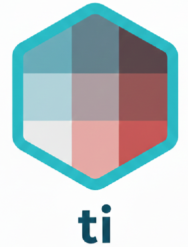

# Install using pak or remotes
remotes::install_git("https://codeberg.org/usrbinr/ti")
# to install from CRAN
pak::pak("ti")
A Business Intelligence Toolkit for Financial Planning & Analysis (FP&A)
ti package is a collection of business intelligence tools designed to simplify common financial planning and analysis (FP&A) tasks such as time intelligence calculations, group member segmentation and factor/variance analysis.
The package is inspired by best practices from a collection of blogs, books, industry research, and hands-on work experience, consolidating frequently performed business analyses into a fast, efficient, and reusable framework.
In particular, the time intelligence functions are heavily inspired by PowerBI DAX functions.
Under the hood, these functions are built upon the great foundations of:
All functions are designed to work with either tibbles or modern databases (DuckDB, Snowflake, SQLite, etc) with a unified syntax.
Even if you are working with tibbles, all functions are optimized to leverage DuckDB for increased speed and performance1
By default, all functions return a lazy DBI object which you can return as a tibble with dplyr::collect()
Key features & benefits
- Unified syntax regardless if your data is in a tibble or a database
- Scale your data with duckdb to optimize your calculations
- Instant clarity as every function summarizes its transformation actions so that you can understand and validate the results
Installation
Install the development version from Codeberg:
What is in ti?
We recommend using the Contoso package for any practice analysis. The contoso datasets are fictional business transactions of the Contoso toy company which are helpful for business intelligence related analysis
There are 2 main categories of functions:
Time intelligence
This is a collection of the most commonly used time intelligence analysis such as Year-over-Year(yoy()), Month-to-Date(mtd()), and Current Year-to-Date over Previous Year-to-Date (ytdopy()) analysis.
These functions are designed to quickly answer questions in a consistent, fast and transparent way.
Key benefits:
Auto-fill missing dates: Ensures no missing periods in your datasets so that correct period comparisons are performed
Flexible calendar options: Handle comparisons based on a standard or non-standard fiscal calendar to accommodate different reporting frameworks
Clear definition: Full transparency into the calculations that are performed, with visibility to any missing or incomplete date periods
Below is the full list of time intelligence functions:
| Function | Description | Shift | Aggregate | Compare |
|---|---|---|---|---|
| YoY | Full Year over Year | X | X | |
| YTD | Year-to-Date | X | ||
| PYTD | Prior Year-to-Date amount | X | X | |
| YoYTD | Current Year-to-Date over Prior Year-to-Date | X | X | X |
| YTDOPY | Year-to-Date over Full Previous Year | X | X | X |
| QoQ | Full Quarter over Quarter | X | X | |
| QTD | Quarter-to-Date | X | ||
| PQTD | Prior Quarter-to-Date | X | X | |
| QOQTD | Quarter-over-Quarter-to-Date | X | X | X |
| QTDOPQ | Quarter-to-Date over Full Previous Quarter | X | X | X |
| MTD | Month-to-Date | X | ||
| MoM | Full Month over Full Month | X | X | |
| MoMTD | Current Month-to-Date over Prior Month-to-Date | X | X | X |
| PMTD | Prior Month's MTD amount | X | X | |
| MTDOPM | Month-to-Date over Full Previous Month | X | X | X |
| WTD | Week-to-Date | X | ||
| WoW | Full Week over Full Week | X | X | |
| WoWTD | Current Week-to-Date over Prior Week-to-Date | X | X | X |
| PWTD | Prior Week-to-Date | X | X | |
| ATD | Cumulative total from inception to date | X | ||
| DoD | Full Day over Full Day | X | X |
Classification Strategies
ABC Classification
ABC classification is a business analysis technique that categorizes items (like products, customers, or suppliers) based on their relative contribution of a value. It expands upon the Pareto Principle (the 80/20 rule), allowing the user to determine which percentage of items or group members contribute to the largest percentage of the total value.
You assign the break points for the categorization and the function will label each category with a letter value.
Cohort
Cohort analysis is a type of behavioral analytics that takes data from a given group of users (called a cohort) and tracks their activity over time. A cohort is typically defined by a shared starting characteristic, most commonly the time period in which the entities first interacted with the product or service.
This allows you to understand retention, turnover and other cohort attributes more clearly.
| Function | Description | Categorizes | Time-Based | Tracks Over Time |
|---|---|---|---|---|
| abc() | ABC Classification groups items by relative contribution (Pareto analysis). | X | ||
| cohort() | Cohort analysis groups entities by a shared start point and analyzes behavior over time. | X | X |